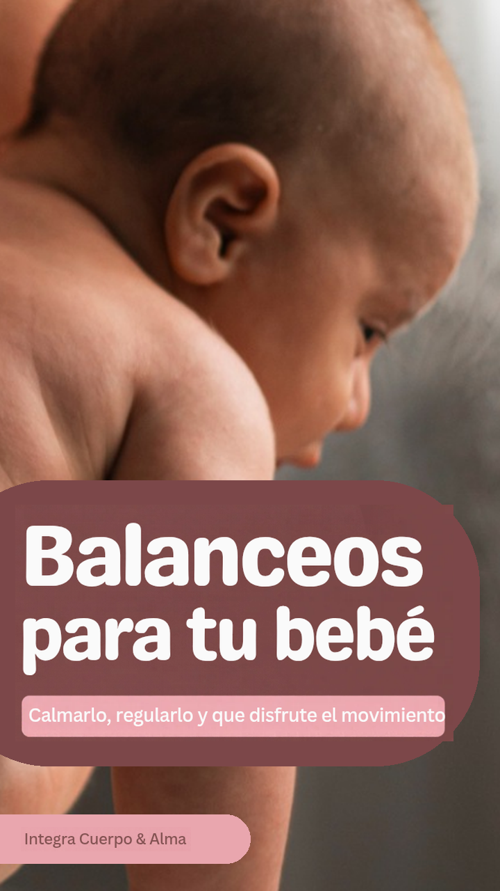
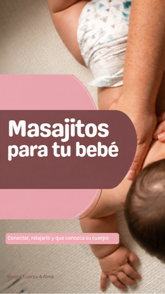

Un momento para vos
Una relajación de 12 minutos para soltar emociones y mover el cuerpo, sentada. Después te vas a sentir más livianita. Escuchala con los ojos cerrados, sola o con tu bebé en brazos.
Balanceos para calmarlo
Formas de sostenerlo y balancearlo para que su cuerpo baje la alerta. Practicalo primero cuando esté tranquilo.

▶Masajitos que lo relajan
Masajes para la pancita, los gases y para prepararlo para dormir.

▶Tus dos guías
Guía para familias: para conocer, calmar y acompañar a tu bebé. Sus señales de sueño, hambre y sobrecarga, rutina de la tarde, piel con piel y mucho más.
📖 Abrir la guía para familiasGuía para cuidarte vos: herramientas para bajar la alerta en un minuto, pedir ayuda y cuidarte en el día a día.
🌿 Abrir la guía para cuidarte vos¿Te quedó alguna duda?
Escribime y contame cómo te fue. Me encanta saber cómo van. Escribime por WhatsApp →